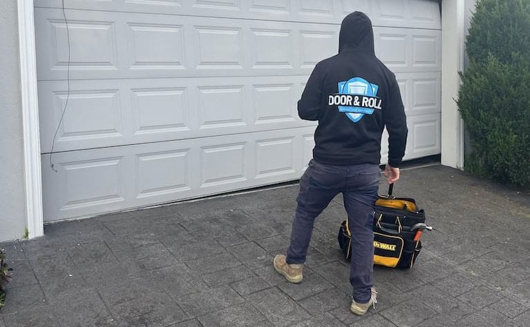

Garage doors are more than just an entryway to your home—they play a crucial role in protecting your car, tools, and other valuables. In some cases, they even safeguard your secret stash of snacks! However, like any other mechanical system, they can develop issues over time. That’s where Garage Door Services in Brisbane come in. Whether your garage door is stuck, making unusual noises, or simply not functioning as it should, professional repair and maintenance services ensure it stays in top condition.
Door & Roll Garage Door Services is your go-to expert for garage door repairs, installations, and maintenance. Serving Brisbane, Melbourne, and the Gold Coast, they offer high-quality solutions at the best prices. No matter the problem, their experienced team is ready to provide reliable and efficient service, helping you keep your garage door running smoothly and securely.
Let’s face it: not all garage door services are created equal. Some promise the world but deliver… well, less than that. At Door & Roll, we pride ourselves on being the go-to experts for garage door services in Brisbane and beyond. Here’s why:
We know how frustrating it can be when your garage door won’t open or close properly. That’s why we offer 30-minute response times across Brisbane, Melbourne, and the Gold Coast. Whether it’s a broken spring, a misaligned track, or a stubborn remote, our team will be there faster than you can say, “Why won’t this door work?!”
Our technicians aren’t just good—they’re garage door whisperers. With years of experience under their belts, they can diagnose and fix any issue, big or small. From traditional roller doors to modern automated systems, there’s nothing they can’t handle. Plus, they’re friendly, professional, and always ready to answer your questions (yes, even the silly ones).
Let’s be honest: garage door repairs can sometimes feel like a mystery box of costs. But not with us! At Door & Roll, we believe in transparent pricing with no hidden fees. We’ll give you a clear quote upfront, so you know exactly what to expect. And with our competitive rates, you’ll get top-notch service without breaking the bank.
We don’t just fix garage doors—we’re your one-stop shop for all things garage-related. Whether you need a new installation, routine maintenance, or emergency repairs, we’ve got you covered. We also offer services for roller doors, sectional doors, and even custom designs to match your home’s style.
As a locally owned and operated business, we’re proud to serve the communities of Brisbane, Melbourne, and the Gold Coast. We understand the unique needs of homeowners in these areas and are committed to providing reliable, high-quality service. When you choose Door & Roll, you’re supporting a local business that truly cares about its customers.
Garage doors are tough, but they’re not invincible. Over time, wear and tear can lead to a variety of issues. Here are some of the most common problems we encounter (and fix!):
Garage door springs are like the unsung heroes of your door—they do all the heavy lifting. But when they break, your door won’t budge. Don’t worry, though; our technicians are experts at replacing broken springs quickly and safely.
If your garage door is making weird noises or getting stuck, it could be due to misaligned tracks. We’ll straighten them out and get your door running smoothly again.
Is your garage door opener acting up? Whether it’s a remote that won’t work or a motor that’s on the fritz, we’ll diagnose the problem and get it fixed in no time.
Rollers are essential for smooth door operation, but they can wear out over time. We’ll replace them with high-quality rollers that’ll have your door gliding like new.
A damaged weather seal can let in dirt, water, and even pests. We’ll replace it to keep your garage clean and dry.
Think of your garage door like a car—it needs regular maintenance to keep running smoothly. Here’s why scheduling routine check-ups with Door & Roll is a smart move:
Small issues can turn into big problems if left unchecked. Regular maintenance helps catch problems early, saving you money in the long run.
With proper care, your garage door can last for decades. Our maintenance services include lubrication, alignment checks, and more to keep your door in top shape.
A malfunctioning garage door can be dangerous, especially for kids and pets. Regular maintenance ensures your door operates safely and smoothly.
Your garage door is one of the first things people notice about your home. Keeping it in great condition boosts your home’s curb appeal and even its value.
We’re not just another garage door service—we’re a trusted partner for homeowners across Brisbane, Melbourne, and the Gold Coast. Here’s what our customers love about us:
We know your time is valuable, so we’ll never keep you waiting. Our team arrives on time, every time, ready to get to work.
Need help? Just give us a call at +61 3 6317 1008 or visit our website at doorandroll.com.au to schedule a service. We’re here to make your life easier.
At Door & Roll, we don’t just fix garage doors—we go above and beyond to ensure our customers are happy. From offering expert advice to cleaning up after ourselves, we’re all about providing a seamless experience.
Garage doors might not be the most glamorous topic, but we love what we do. And that passion shows in every job we take on.
Ready to get your garage door back in shape? Scheduling a service with Door & Roll is as easy as 1-2-3:
Dial +61 3 6317 1008 to speak with one of our friendly team members. We’ll listen to your concerns and schedule a convenient time for your service.
Prefer to book online? Head over to doorandroll.com.au and fill out our simple contact form. We’ll get back to you ASAP.
Once your service is scheduled, our team will arrive on time, ready to tackle your garage door issues. All you have to do is sit back and enjoy the peace of mind that comes with knowing your door is in good hands.
Your garage door is more than just a door—it’s a crucial part of your home’s security, functionality, and curb appeal. When it’s not working properly, it can throw a wrench in your day. But with Door & Roll Garage Door Services, you don’t have to worry. We’re here to provide fast, reliable, and affordable garage door services in Brisbane, Melbourne, and the Gold Coast. So, the next time your garage door starts acting up, don’t stress. Just give us a call at +61 3 6317 1008 or visit https://doorandroll.com.au/ to schedule a service. We’ll have your door back in working order before you can say, “Garage door, you’re my hero!”